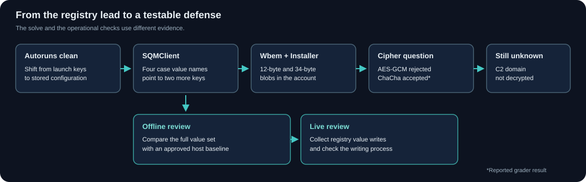

Abacus / Cyber Ops / CTF Writeups / Forensics / The Implant Trail Through Three Registry Keys
The Implant Trail Through Three Registry Keys
The familiar persistence keys were quiet. A path to an executable under Public led me somewhere more interesting.
Summary
The challenge. Trace a suspicious configuration through an offline Windows SOFTWARE hive and identify the encryption method behind it.
What I did. I moved from autorun triage to a hive-wide path search, followed two registry pointers, and compared the blob lengths before answering the cipher question.
The result. The challenge account reports six graded answers accepted, including ChaCha20-Poly1305 after an AES-256-GCM rejection. The optional attempt to recover the C2 domain did not succeed.
The limit. No grader transcript or implant binary is available. A local XML copy is truncated; only one 34-byte Upload value could be checked in it. The defensive lab was tested on invented data.
Case details
| Field | Value |
|---|---|
| Category | Forensics / Windows registry and applied cryptography |
| Difficulty | Hard |
| Tags | Windows Forensics, Registry Hive Analysis, ChaCha20-Poly1305, AEAD, T1112, T1036.005, Registry-Resident Implant, Schema-Foreign Detection, Structured Uncertainty |
| Status | Solved-Verified in the challenge account |
| Graded result | Six answers reported accepted; the cipher answer was ChaCha20-Poly1305 after a rejected AES-256-GCM answer |
| Unfinished lead | The optional C2 FQDN recovery did not authenticate or yield a domain |
| Evidence limit | No grader transcript or implant binary; the local XML copy stops mid-document |
Defensive proofs of concept for adapting this case to real environments: browse the GitHub artifacts folder.
1. Problem Statement and Threat Scenario
A simulated perimeter alert pointed to periodic outbound traffic from a Windows workstation. I had an offline HKLM\SOFTWARE hive export and a set of graded questions about the host, the suspicious registry state, and the encryption method. The hoped-for operational prize was the command-and-control domain. If I could recover it, a defender could check DNS history and block or sinkhole the name. I never got that domain.
The challenge account says all six graded answers were accepted. That is the solved part of this case. The attempt to decrypt the FQDN came afterward and stayed open. I do not have the grader transcript or the implant executable to replay either claim. The investigation described an export around 120 MB. A local software.xml copy is 46 MB and incomplete: XML parsing stops on an unclosed token. I could independently locate an Upload value under Classes\Installer and confirm its base64 data decodes to 34 bytes. I could not replay the complete hive walk from that copy.
Threat model
The scenario describes an implant with enough access to write under HKLM\SOFTWARE. That suggests a privileged process or a suitably permissive key, but the hive alone does not identify the writing token. A program path under C:\Users\Public\ points toward a possible on-disk component. The file itself was not available, so I cannot show that it executed, what launched it, or how it handled the encrypted values.
That distinction matters for the word "persistence." The registry values preserve configuration across reboots. I did not find an autorun trigger in the keys I checked. The specific execution mechanism remains unknown. The perimeter alert also gives context, not a packet capture or proof that the unknown domain carried DNS-based C2.
2. Techniques, Tooling, and Actions Taken
I began with the ordinary Windows routes. A streaming XML walk through Group Policy DataStore helped identify the workstation; ProfileList and LogonUI narrowed the user context to the account with RID 1001. Those are orientation steps, not malware evidence. I then checked Run, RunOnce, Winlogon, IFEO, and AppInit DLL locations. The account records no malicious hit there. Its two Run entries were SecurityHealth and VMware User Process; I treated them as routine leads, though I cannot recheck their signatures from the surviving XML.
The useful pivot came from changing the question. I had been asking what started automatically. The scenario also mentioned downloaded malware, so I searched the hive for a path to an executable in a user-writable place. One recorded hit put C:\Users\Public\svchost.exe in Microsoft\SQMClient\ConfigPath. That path made me inspect the surrounding values instead of continuing to widen the autorun sweep.
| Step | Action and result |
|---|---|
| ST.1 | Walked GP DataStore for the host name. |
| ST.2 | Cross-checked ProfileList and LogonUI for the user context. |
| ST.3 | Checked standard launch keys; no suspicious trigger was established. |
| ST.3a | Considered Defender exclusions, then deprioritized the unfinished sweep after the path hit. |
| ST.3b | Considered a top-level Partner key; the recorded Wallet subkey did not support that lead. |
| ST.4 | Shifted from launch-key search to stored configuration. |
| ST.5 | Found the Public executable path in SQMClient\ConfigPath. |
| ST.6 | Found Token, ConfigPath, CacheMap, and SessionMap at the SQMClient root. |
| ST.7 | Followed CacheMap to Classes\Installer\Upload, recorded as REG_SZ with 34 decoded bytes. |
| ST.8 | Followed SessionMap to Microsoft\Wbem\SessionId, recorded as a 12-byte REG_BINARY value. |
| ST.9 | Read the XML type="string" attribute for Upload, which corresponds to REG_SZ in this export. |
| ST.10 | Treated the 32/12/34-byte grouping as an AEAD hypothesis with at least two candidates. |
| ST.10a | Submitted AES-256-GCM on a Windows-library prior; the account records a rejection. |
| ST.11 | Submitted ChaCha20-Poly1305; the account records acceptance. |
| ST.12-13 | Tried roughly 2,000 initial and 17,322 later decryption combinations; no authenticated plaintext was recorded. |
| ST.14 | Stopped the optional FQDN search and named the additional artifacts needed. |
| ST.15 | The account reports all six graded questions accepted and a separate fifteen-question follow-up answered from the hive. That Q&A is unavailable to reproduce here. |
Methodology notes on the rejected branches and pivots
The clean autorun sweep was useful because it ruled out the obvious explanation within the keys examined. It did not rule out every launch mechanism. My first time-window scan was also noisy; ordinary Windows updates crowded the same key last-write range. The path search gave me a better lead. The two extra keys then made sense of the pointers stored under SQMClient.
I can see why AES-GCM seemed plausible. A 32-byte key candidate, 12-byte nonce candidate, and 16-byte tag fit common AES-256-GCM and IETF ChaCha20-Poly1305 layouts. Windows as the target system was a prior, not a discriminator. The grader response is what separated the two answers in this record; no successful local tag check did.
Tool/Code Timeline
Python's xml.etree.ElementTree.iterparse drove the hive walk and key inspection. A path search found the Public executable reference. Local scripts then compared value names and blob lengths. The later decryption attempts crossed candidate key derivations, nonce interpretations, additional authenticated data (AAD), and ciphertext/tag layouts. No runnable script or attempt log from those sessions survives, so the counts describe the account rather than an independently replayed sweep.
3. Tooling and Scripts
3.1 Streaming regxml walker with mtime windowing
The export represents keys as nested node elements with a key-level mtime. Its value elements carry key, type, and value attributes. I used a streaming walk so a large XML export did not need to become one document tree in memory. The key last-write time can narrow a search, but it belongs to the key, not to each value. A later benign write can change it.
I checked the published iterparse sketch again before making a reusable tool. It asks for a parent key's mtime while processing child values, even though the XML may place <mtime> after those values. It also clears elements without removing them from their parent, so its claim of constant memory is too strong. The offline snapshot reviewer waits until a node ends, retains only its small target-key fields, and removes processed elements. It requires a complete parse before reporting anything. The available XML copy fails that check rather than producing a partial clean bill.
3.2 Schema-foreign value detector
The four SQMClient names and the SessionId and Upload companions are worth checking together. I originally treated a small list of "normal" value names as a complete Microsoft schema. It is safer to call that list a local baseline candidate. Windows version, installed features, and vendor software can change what appears under a legitimate key. An extra value is a review lead, not proof of injection. The snapshot reviewer therefore reports the exact six-value case pattern without asserting that every other name is malicious.
3.3 AEAD brute-force harness (algorithm-generic)
The exploratory harness tried a raw 32-byte Token, hashes and HMACs of hive fields, HKDF/PBKDF2 variants, registry paths as AAD, and several ciphertext layouts. The later ChaCha-focused rounds were recorded as 10,400, 5,536, and 1,386 combinations, which sum to 17,322. With the earlier approximate 2,000 attempts, the account describes roughly 19,300 attempts overall, not 17,300 total. I cannot establish which variants actually ran because the run log is absent.
The saved code excerpt also passes hashlib.sha256 to PyCryptodome's HKDF and PBKDF2 functions. A local harmless-input check raises AttributeError before either derives a key; that API expects PyCryptodome's SHA256 module. This does not prove the exploratory sessions used the broken excerpt. It does mean the excerpt cannot verify their negative result. I would start any new recovery attempt with a published AEAD test vector, the actual binary's calls or constants, and a logged, bounded candidate set. I have not published a speculative decryption tool as a working recovery artifact.
3.4 Triage one-liner -- registry-resident high-entropy blob detector
The saved shell pipeline proposed an entropy cutoff above 5.5 bits per byte for decoded values as short as 8 to 64 bytes. For a 32-byte sample, the maximum plug-in Shannon estimate is log2(32) = 5 bits per byte, even if every byte differs. A 34-byte sample tops out near 5.09. That threshold would discard the very Token and Upload lengths it was meant to find. I use strict base64 decoding and length checks as triage features in the snapshot reviewer, then ask whether the names and pointers form a coherent case. Short-sample entropy is too brittle here.
4. Concept Explanation
4.1 Windows registry forensic semantics
Windows records a last-write time on each registry key, including when one of its values changes. A value has no separate last-write timestamp in this view. A fresh SQMClient timestamp could come from the suspect write or later ordinary activity. That is why I treated the time window as a search aid and looked at the value set and linked paths before drawing a conclusion.
The XML type attribute describes the exported registry value type. In this case Upload was a string containing base64 text, and SessionId was described as binary. Base64 is an encoding, not evidence of encryption. I had to decode it and check the resulting size before the AEAD idea had any shape at all.
4.2 ChaCha20-Poly1305 (IETF) cryptographic structure
RFC 8439 defines the IETF AEAD with a 32-byte key, a 12-byte nonce, and a 16-byte authentication tag. ChaCha20 encrypts the plaintext; Poly1305 authenticates the ciphertext and any AAD. An implementation often stores ciphertext || tag, so 34 decoded bytes could represent 18 bytes of ciphertext plus a tag. AES-256-GCM can use the same key and nonce lengths and a 16-byte tag. Size alone cannot tell those constructions apart, and arbitrary 34-byte data could have a different purpose entirely.
The registry account describes a 32-byte decoded Token, a 12-byte SessionId, and a 34-byte decoded Upload. That grouping made AEAD a reasonable hypothesis. It did not prove that Token was the key, SessionId was the actual nonce, or Upload used a canonical layout. The grader accepted ChaCha20-Poly1305 as the answer to its cipher question. A verified decrypt would be a different kind of evidence, and I did not get one.
4.3 Registry-resident configuration as a defense-evasion pattern
The interesting part is the indirection. SQMClient held a path and two pointers. One pointer led to the short binary value under Wbem; another led to the longer encoded value under Classes\Installer. A rule looking only for a new registry key would miss writes into these existing keys. A reviewer reading only SQMClient would also miss the companion blobs. Encryption kept the supposed domain out of an ordinary string search.
The same design could be benign in another product. The path under Public, this particular value grouping, and the challenge context make it suspicious here. I would still check the writing process and compare a full host snapshot with an approved baseline before naming a real implant.
5. Exploit/Analysis Mechanics
5.1 Why mtime banding works (with caveats)
The key last-write time helped me choose where to look, but my initial time-only sweep returned too much ordinary activity. A six-hour window before collection was a starting query, not a general detection threshold. Clock skew, later updates, and missing collection context can move a real write outside that band. The value pattern carried more weight than the timestamp.
5.2 Why schema-foreign detection is dispositive
I would no longer call one foreign value dispositive. A baseline gathered from the same Windows build and approved software can show which names are unusual. The six values across three linked keys form a stronger case lead than Token alone. The offline reviewer tests that exact combination and deliberately leaves the verdict to a human. Its benign and single-value fixtures show the difference.
5.3 Why AEAD parameter inference is high-confidence
The 32/12/34-byte partition narrows my hypotheses but cannot identify the cipher or even prove that all three values belong to one cryptographic operation. The Upload length is consistent with 18 bytes of ciphertext and a 16-byte tag. AES-GCM shares that layout. I should have presented both candidates until I had a tag check, API trace, binary constant, or grader response. The grader supplied the last of those, and only for the answer it marked correct.
5.4 Why ST.10a failed and what it teaches
I submitted AES-256-GCM first because it was a plausible Windows-native choice. It was rejected. ChaCha20-Poly1305 was then accepted. The wrong turn is useful: when two algorithms share the same visible lengths, familiarity with one implementation is a guess about the environment. I would preserve both hypotheses in a real investigation and tell the next analyst what observation could distinguish them.
5.5 Why the cryptanalytic sweep terminated in structured uncertainty
The extra FQDN search produced no authenticated plaintext. That is a real stop point, but it does not identify the missing ingredient. A different AAD, transformed token, nonce construction, record layout, or error in the test harness could each explain the misses. Poly1305 tag byte distance does not tell me whether a wrong key is "close" to the right key. I would not use a tag-difference score as a key-derivation guide.
My next collection requests would be the executable named by ConfigPath, the full host registry set including SYSTEM and relevant user hives, and process or network telemetry from the same period. Those could reveal the actual derivation or the domain in use. Until then, the C2 FQDN stays unknown. The graded challenge is complete; that optional operational question is not.
6. Lessons Learned (Practitioner Perspective)
What this exercise validated
The clean Run-key pass forced me to change the question. Searching for where a program stored state found the SQMClient path and the two pointers. The recorded grader feedback also settled the answer I could not settle from length alone. I learned more from the rejected AES-GCM submission than from treating every 12-byte value as a nonce.
What this exercise surfaced as gaps
I lacked a host-specific registry baseline and the implant binary. The time-only filter was noisy. The saved entropy cutoff would miss the 32- and 34-byte blobs. The printed KDF example fails its own library call, and I have no test-vector or attempt log proving the optional sweep ran as described. These gaps limit the crypto conclusion to the reported grader answer and leave the FQDN unrecovered.
Transferable principles
For a real host, I would inventory the artifact, log ordinary dead ends, and keep the launch mechanism separate from stored configuration. I would compare the whole three-key pattern against a same-build baseline before promoting a registry-value hit. A failed AEAD tag check tells me only that one exact key, nonce, layout, and AAD combination did not authenticate. It cannot measure how near I am to a correct key.
Methodological principle: describe before hypothesize
My useful steps described bytes, types, paths, and value names before naming an implant or cipher. The AES-GCM answer moved faster than the evidence allowed. In the write record, I can keep both facts: the prior was understandable, and the submission was wrong.
7. Extrapolation
7.1 Individual practitioner skill development
This case gave me practice walking a large registry export, following internal references across keys, and separating a cipher-shaped blob from an authenticated decrypt. The next skill I would build is a reproducible evidence ledger for every tested crypto combination. It should record the candidate construction and pass or fail without printing keys or plaintext into logs.
7.2 Security operations (SOC, IR, threat hunting)
On an endpoint I own, I would look for registry value-set events at these exact paths, then ask who wrote them and whether the named executable exists. The Sigma candidate catches a single matching write. The event reviewer can show whether all six names appeared on one host in a retained event export. Neither sees an old value written before logging began. An offline snapshot supplies that missing state; a trusted baseline supplies context.
I would acquire the binary and full registry set before trying to decrypt the domain. If a DNS log exists, I would compare it with actual process and network evidence. I would not call a non-resolving name C2 solely because the scenario suggested one. Once a domain is recovered and confirmed, it can support broader host searches and response actions.
7.3 Intelligence operations
The three-key layout is a useful behavioral feature for comparison with other samples. It does not establish actor attribution. The encrypted blob and reported cipher answer are similarly weak attribution evidence without the executable or matching campaigns. I can share a careful pattern description with a defender now. I cannot share a verified FQDN or claim a TAXII feed received one.
8. Reusable Tools, Scripts, and Artifacts
8.1 Triage decision tree
Start with a complete SOFTWARE snapshot
-> inspect common launch keys and record the negatives
-> search for executable paths in user-writable locations
-> inspect the parent key and follow any registry pointers
-> compare the value set against an approved same-build baseline
-> decode candidate blobs and record lengths without guessing a cipher
-> obtain the executable or a verified test vector before decrypting
8.2 AEAD-fingerprint checklist
| Observation | What it supports | What it cannot settle |
|---|---|---|
| 32 decoded bytes | A 256-bit key candidate or another 32-byte value | Whether the bytes are a key or need derivation |
| 12 binary bytes | A common AEAD nonce length | Whether this value was used as the nonce |
| 34 decoded bytes | A possible 18-byte ciphertext with a 16-byte tag | Whether the value is AEAD output or which cipher made it |
| Accepted ChaCha20-Poly1305 answer | The reported grader choice | A local authenticated decrypt or the hidden FQDN |
8.3 Schema-baseline corpus (starter set)
The short list of common SQMClient, Wbem, and Installer names I used during the solve is a starter hypothesis, not an exhaustive Microsoft schema. I would build the real baseline from approved hosts on the same OS build and review differences with the system owner. The case's six names provide a separate, testable selector. The regxml reviewer reports the pattern without labeling every other name malicious.
The runnable defensive set includes the offline XML reviewer, normalized event reviewer, Sigma candidate, KQL and SPL templates, seven-test suite, and lab guide. The invented fixtures are complete case XML, benign XML, single-value near miss, mixed event stream, truncated XML, DTD rejection case, and malformed events. The diagram is also a downloadable file. Every input is synthetic; none contains the challenge's secret material.

9. Framework Mapping
Tier 1 -- Always-Present Checklist
| Framework | Case fit |
|---|---|
| MITRE ATT&CK | T1112 Modify Registry fits the described placement of configuration values. T1036.005 is a plausible masquerade hypothesis for svchost.exe under Public; I have no binary or process event to confirm it. T1071.004 needs actual DNS-based command traffic and is not observed here. T1140 and T1027.013 remain conditional on binary or decrypted-content evidence. |
| MITRE ATLAS and OWASP LLM Top 10 | No ML or LLM system appears in the case. |
| OWASP Top 10 | No web application is in scope. |
| CVSS, EPSS, CISA KEV | No affected product or CVE is identified. |
| Cloud benchmarks and CSA CCM | The scenario is an endpoint, with no cloud control plane to assess. |
Tier 2 -- Applied Where They Add Value
CAPEC-203 describes manipulating registry information through an authorization weakness. The hive does not show how this writer gained permission, so I treat it as an investigative comparison, not a demonstrated exploit. CAPEC-441 and CWE-693 are too broad to turn the observed value names into a specific product defect. The useful design question is who can write these keys, what the application trusts from them, and which sensor records the change. STRIDE's tampering category can organize that review. D3FEND labels are unnecessary to run the concrete snapshot and write-event checks below.
10. Threat Intel and Standards Integration
10.1 STIX 2.1 representation
I would share the key paths and case value-name pattern with its provenance and confidence. I had also noticed leading whitespace in the encoded Token; it may help compare a second sample, but it cannot identify an actor by itself. I had sketched a STIX bundle, but its fields were placeholders. I have no verified FQDN, sample hash, or production sighting to put in an observed indicator, and I did not validate the pattern with a STIX implementation. A future STIX object could describe an indicator derived from a confirmed sample or fleet hunt. No TAXII exchange happened here.
10.2 STIG references
I had also listed representative Windows STIG IDs. I could not verify them against a pinned OS and STIG release for this case, so I do not make a STIG finding here. A defender who needs that mapping should use the version applied to their host. The immediate technical requirement is clearer: Security Event 4657 needs a Set Value SACL on the key as well as an Audit Registry policy. Sysmon registry events 12-14 offer another route when configured to collect these paths.
10.3 CIS Controls v8
CIS 8.5 and 8.11 fit detailed audit collection and review of the value writes. CIS 13.6 concerns network flow collection, which could help revisit the perimeter alert; it does not expose encrypted registry data or prove DNS C2. Disabling telemetry services would not remove an attacker's ability to write a key they already control, so I have not offered it as a fix for this pattern.
11. Controls Mapping and Mitigation Realization
11a. Standards Mapping
| Control | Concrete connection |
|---|---|
| NIST SP 800-53 Rev. 5 SI-4 | Monitor registry value changes and investigate unusual writers. |
| AU-2 and AU-6 | Choose the registry events to log and establish a review process. |
| AC-6 | Limit who may modify protected configuration keys. Check effective ACLs rather than assuming HKLM always requires elevation. |
| SI-7 | Check integrity of a trusted baseline and the executable referenced by the configuration. |
| CIS 8.5 and 8.11 | Collect and review the value-write records that the hunt needs. |
This table points to work a real owner can perform. I have not assessed the challenge host for compliance.
11b. Mitigation Realization
First, I would preserve the host state: the SOFTWARE hive, SYSTEM and relevant user hives, the file named in ConfigPath, and available process and DNS telemetry. Then I would enable or confirm value-write collection for the three paths. Sysmon Event 13 or MDE registry events can identify the writing process; native Event 4657 needs its SACL. I would compare a complete snapshot against a trusted same-build baseline and ask the system owner whether each foreign name is expected.
Application control can prevent a user-writable directory from becoming an execution location, but it needs a real policy tested against that fleet. Removing or disabling CEIP is no substitute for protecting the registry ACLs or blocking untrusted code. The offline reviewer, write-event reviewer, and hunt templates make the detection side concrete without claiming a control has been deployed.
12. Indicators, Artifacts, and Detection Engineering
12.1 Indicators of Compromise (sanitized / illustrative)
The case-specific observable is a cluster of value names: Token, ConfigPath, CacheMap, and SessionMap under Microsoft\SQMClient; SessionId under Microsoft\Wbem; and Upload under Classes\Installer. The recorded ConfigPath pointed to C:\Users\Public\svchost.exe. The Token, SessionId, and Upload were described as 32, 12, and 34 decoded bytes. These are leads for this case, not a universal malware signature. I have no verified domain, IP, binary hash, or network packet to publish as a network IOC.
12.2 Sigma rule -- registry-resident implant configuration
The experimental Sigma selector matches each exact key/value-name pair as a possible registry value-set event. Its claim is narrower than a general "schema-foreign" detector. It cannot compare a whole hive to a baseline, correlate all six values, or identify the writer by itself. PySigma parsed it locally. An owner still has to convert it for their backend, check field mapping, and review ordinary software that may use one of these names.
12.3 YARA rule -- dropper masquerade pattern
I have no dropper bytes for a useful content rule. My first YARA idea used scanner-specific filepath and filename externals to match a familiar executable name under Public. That is a file-location policy, and those externals are not portable across scanners. I have not published it as a validated binary detector. Process-creation telemetry and application-control policy are better places to test that location hypothesis until a sample is acquired.
12.4 SIEM detection queries
The KQL and SPL templates look for paired key and value-name writes, then return time, host, and initiating process fields without printing registry value data. KQL uses Microsoft's DeviceRegistryEvents schema; SPL assumes Sysmon Event 13 fields in a local index. Neither query ran in a backend. My earlier ES|QL sketch filtered to SQMClient while claiming coverage of Wbem and Installer. I left that incomplete query out of the reusable set.
12.5 Log source and data pipeline requirements
The live path needs a registry sensor covering all three keys, a host identifier, event time, the target value path, and a writing process. Sysmon Event 13 can supply value-set events; Event 1 can help inspect a Public-path executable if it ran. MDE registry events offer another source. Native Event 4657 requires the right SACL. Old values may predate every event-retention window, so an offline hive snapshot is a second sensor, not a luxury.
The event reviewer expects normalized host, integer event_id, and target_object fields. The invented event fixture exercises a complete host, a benign host, and a one-value near miss. It does not infer a kill chain from the order of those lines. A real investigation would connect the writer to file provenance, execution, and network data before escalating.
12.6 Detection engineering notes
I would start at triage severity. One Token write under SQMClient is worth examining; it does not confirm an implant. The six-value constellation and an untrusted writer increase concern, but I have no fleet data to estimate false positives. The synthetic tests cover positive, benign, near-miss, malformed, and DTD inputs. The truncated XML test matters: a partial export cannot be treated as a clean host merely because the scanner has not reached the suspect key. No live telemetry, SIEM conversion, production sample, or detection-rate study was performed.
13. Visual Artifact
The solve flow above shows the autorun dead end, three-key pivot, cipher answer, and remaining gap. This defender cross-section ties the same registry state to an offline baseline and live value-write monitoring. The star on the cipher node marks the reported grader result rather than a locally verified decrypt.

14. References
Standards and frameworks
MITRE
- ATT&CK T1112, T1036.005, T1027.013, T1140, and T1071.004 for the observed or bounded mappings above.
- CAPEC-203 for a conditional registry-manipulation comparison.
Cryptographic specifications
Windows internals
- Registry key last-write structure, Sysmon events, Security Event 4657, and Defender
DeviceRegistryEventsfields.
STIX / STIG / CIS Benchmarks
- OASIS STIX 2.1, DISA STIG library, and CIS Windows benchmarks. No STIX package or STIG finding was asserted for this case.
Detection engineering
- Sigma rule specification for the experimental selector's format.